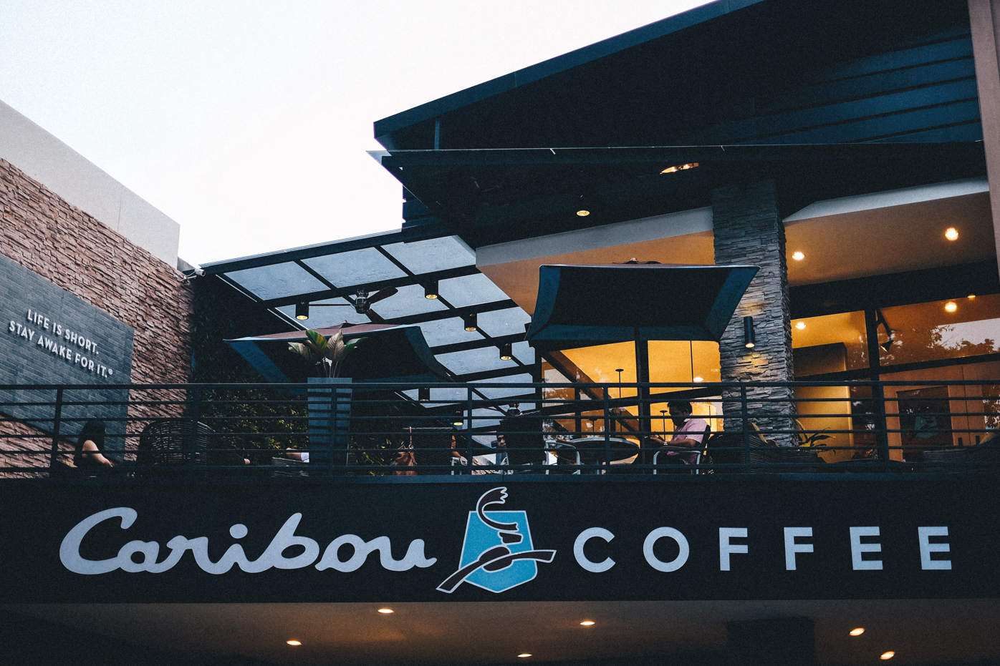
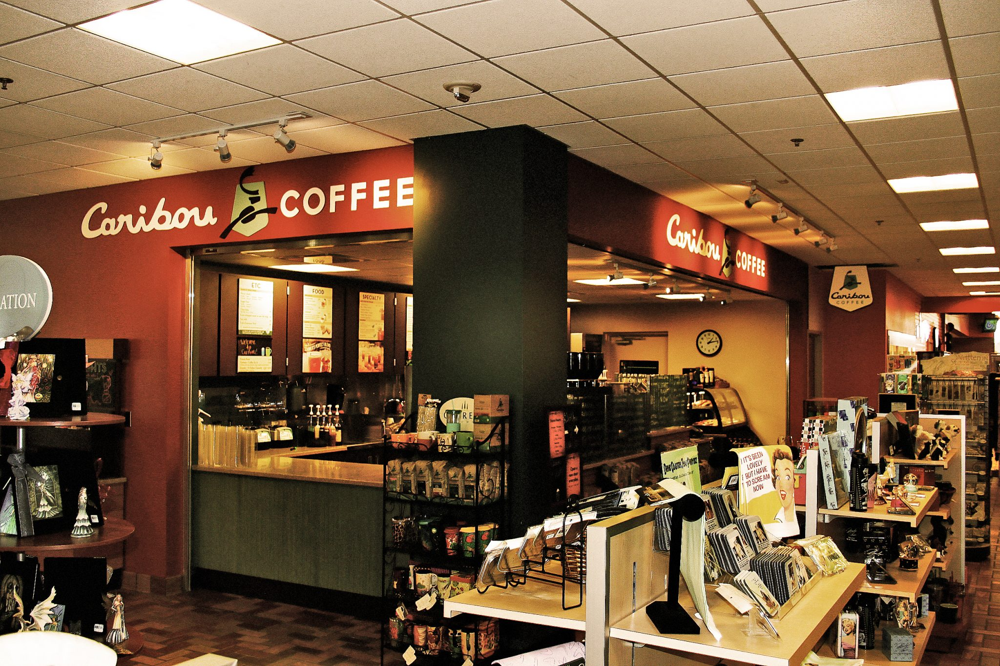
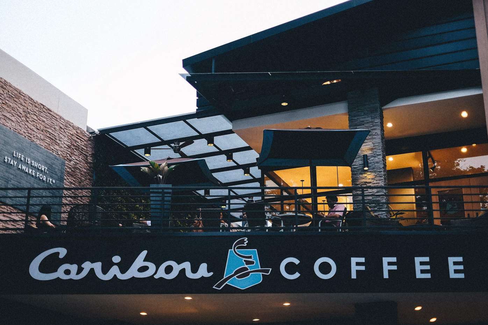
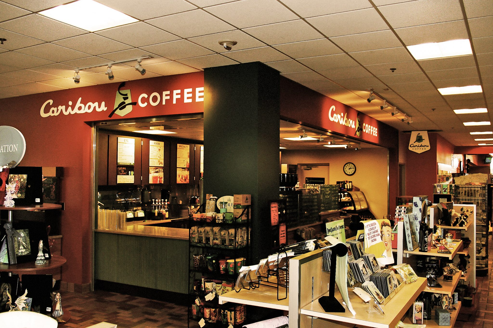

|
 |  |
| |
 |  |
Caribou Coffee founder, John Puckett, was working as a management consultant for Boston-based firm Bain & Company, helping develop ideas and strategies for other companies, when he decided he wanted to become an entrepreneur. After a trip to Denali National Park in Alaska, he and his wife, Kim, decided to raise money and start a coffee company. His wife stayed with a job at General Motors while John moved to Minnesota to find the first site and put together financing.
44th and France or Store 101, is located in Edina, Minnesota
USA